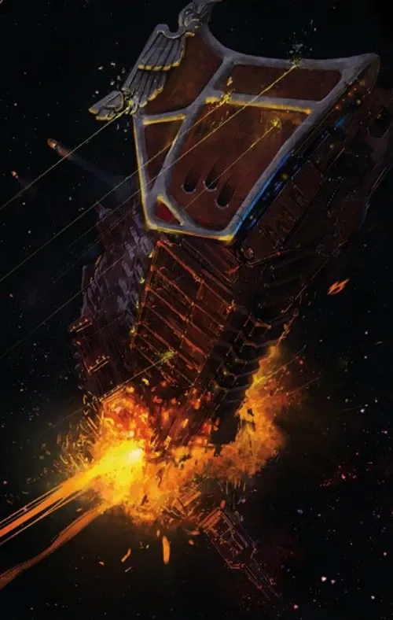
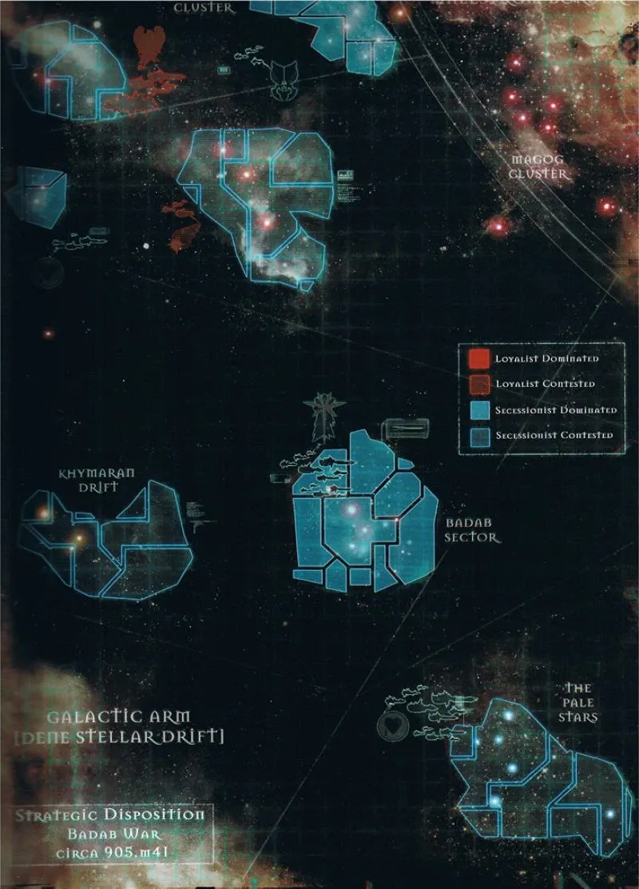
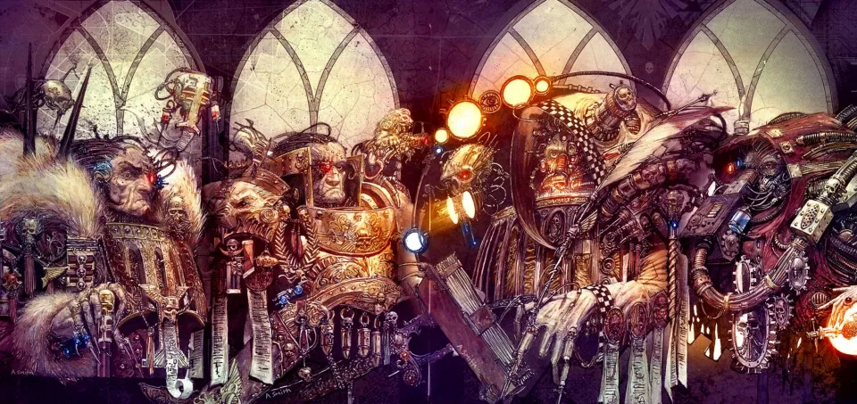
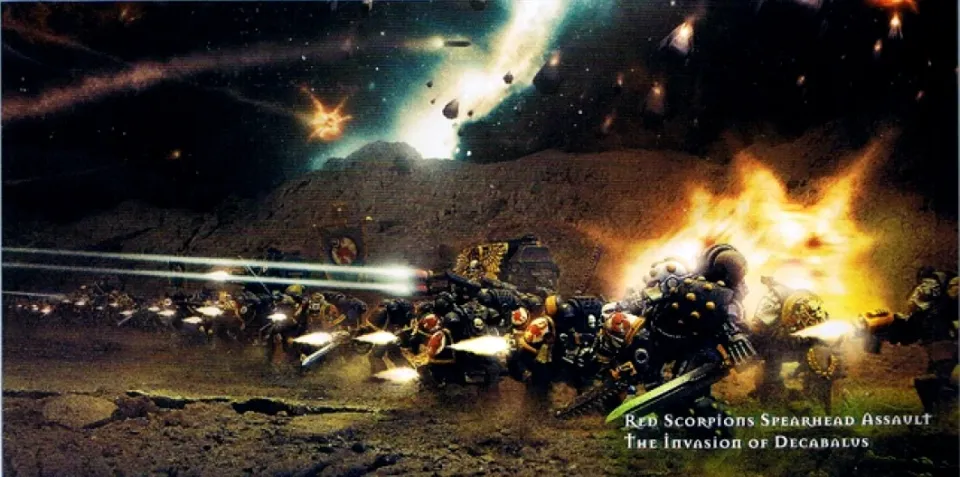
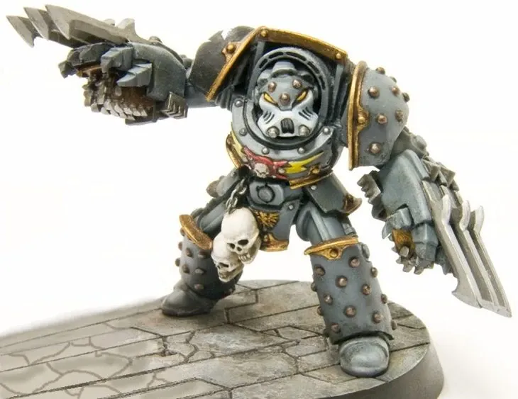
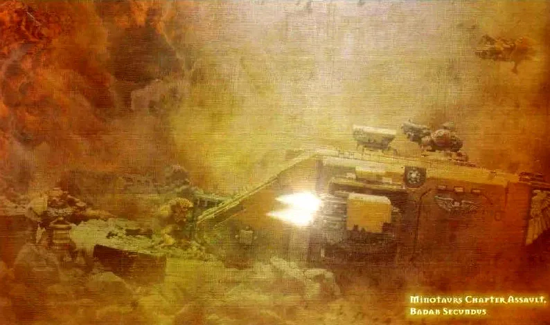
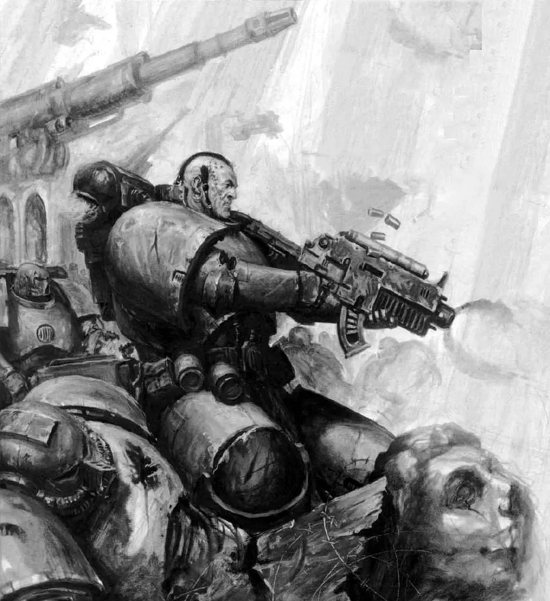
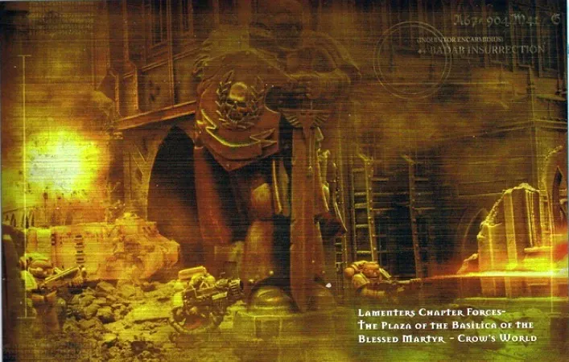
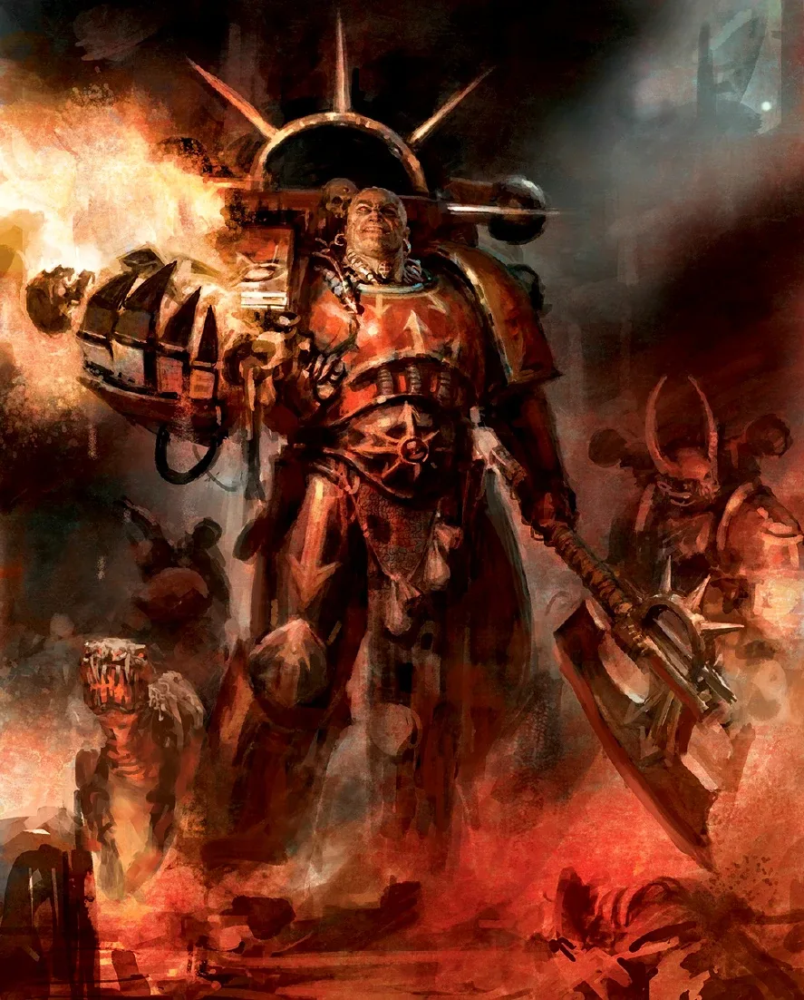

01ภาพรวม
Badab War (บาแดบ วอร์) เป็นสงครามกลางเมืองครั้งใหญ่ที่สุดระหว่าง Space Marine ในยุค 41 เกิดขึ้นที่ Maelstrom Zone ภูมิภาครอบพายุ Warp ชื่อ Maelstrom ใน Segmentum Ultima ซึ่งเป็นที่ซ่อนของโจรสลัด ผู้ทรยศ และสิ่งชั่วร้ายนานาชนิด
สิ่งที่ทำให้สงครามนี้น่าสนใจคือไม่มีฝ่ายไหนดีหรือเลวชัดเจนตั้งแต่แรก ฝ่ายแยกตัวเริ่มจากข้อเรียกร้องที่มีเหตุผล ส่วนฝ่ายจักรวรรดิก็มีทั้งวีรบุรุษและผู้ที่ทำเรื่องโหดร้าย — แต่สุดท้ายเส้นทางของ Lufgt Huron จบลงที่ Chaos
02Tyrant of Badab
Maelstrom Zone เคยมี Chapter สามแห่งที่ร่วมกันเฝ้าระวัง เรียกว่า Maelstrom Warders หนึ่งในนั้นคือ Astral Claws ซึ่งมีฐานที่ดาว Badab Primaris
Huron ยึดอำนาจ
หลังการรัฐประหารที่ล้มเหลวบน Badab Primaris Chapter Master Lufgt Huron ปราบอย่างโหดร้ายแล้วตั้งตนเป็นผู้ปกครองดาว เรียกตัวเองว่า "Tyrant of Badab" อ้างแบบอย่างของ Ultramar ที่ Ultramarines ปกครองดาวหลายร้อยดวง
Badab Schism
Huron ขอทรัพยากรเพิ่มเพื่อรับมือภัยใน Maelstrom แต่ฝ่ายบริหารกลับเพิ่มโควตาภาษี เขาจึงระงับการส่งภาษีและ gene-seed สร้างแนวป้องกันอวกาศ "Ring of Steel" และพระราชวัง "Palace of Thorns" ความขัดแย้งยืดเยื้อกว่าร้อยห้าสิบปี
ยิงกองเรือภาษี
คณะตรวจสอบของจักรวรรดิพยายามฝ่า Ring of Steel เพื่อเรียกเก็บภาษี และถูกยิงทำลายทั้งกองเรือ คนตายกว่า 20,000 คน Huron อ้างว่าอีกฝ่ายไม่ยอมหยุดเอง
ประกาศแยกตัว
Huron ออก "Articles of Just Secession" ประกาศแยก Maelstrom Zone โดยมี Lamenters และ Mantis Warriors ลงนามร่วม ภายหลัง Executioners ก็เข้าร่วม


03Chapter ทั้งสองฝ่าย
ฝ่ายแยกตัว (Secessionists)
- Astral Claws — Chapter ของ Huron แกนนำ
- Mantis Warriors — พันธมิตรใน Maelstrom Warders
- Executioners — เข้าร่วมด้วยความภักดีต่อ Huron
- Lamenters — Chapter สายเลือด Blood Angels ที่ถูกคำสาปตลอดประวัติศาสตร์
- Tyrant's Legion — กองทัพมนุษย์ของ Huron
ฝ่ายจักรวรรดิ (Loyalists)
- Red Scorpions — ผู้บัญชาการคนแรก Verant Ortys เสียชีวิต แทนที่ด้วย Carab Culln
- Minotaurs — Chapter ลึกลับที่รับคำสั่งตรงจาก High Lords
- Fire Hawks, Star Phantoms, Marines Errant
- Carcharodons — Chapter ลึกลับจากขอบกาแล็กซี
- Salamanders, Exorcists, Howling Griffons, Raptors, Sons of Medusa, Novamarines
- Inquisitor-Legate Jarndyce Frain แห่ง Ordo Hereticus

04ลำดับการรบ
สงครามเปิดฉาก
Chapter ภักดีที่อยู่ใกล้เริ่มปะทะกับฝ่ายแยกตัว Space Marine 5 Chapter รบกันอย่างเปิดเผย
High Lords ตัดสิน
ผู้แทนสามคนของ High Lords of Terra มาถึง Inquisition พบหลักฐานมัดตัว Huron ทั้งการกักตุน gene-seed และการ "สร้าง Legion" ผู้แทนประกาศว่านี่คือภัยต่อความมั่นคง ไม่ใช่ความขัดแย้งภายใน และสั่งให้ฝ่ายแยกตัวยอมแพ้โดยไม่มีเงื่อนไข
การทรยศที่ Grief
Huron เสนอสงบศึกและเจรจาที่สถานีร้างในระบบ Grief Lord High Commander Verant Ortys แห่ง Red Scorpions ยอมไปพบแม้ Inquisitor จะคัดค้าน การเจรจาจบลงด้วยการนองเลือดและ Ortys ถูกสังหาร Carab Culln ขึ้นเป็นผู้นำฝ่ายภักดีแทน
ความลับของ Huron
Inquisition ค้นพบว่า Astral Claws แอบรวม Tiger Claws Chapter ที่หายสาบสูญเข้ามา เพื่อขยายเป็นกองทัพขนาด Legion — สิ่งต้องห้ามตาม Codex Astartes
Minotaurs มาถึง
Minotaurs เข้าสู่สงครามและกลายเป็นหัวหอกที่โหดเหี้ยมที่สุดของฝ่ายภักดี
ทำลาย Lamenters
ด้วยข้อมูลจาก Inquisitor Frain Minotaurs ซุ่มโจมตีเรือ Mater Lacrimarum ของ Lamenters จน Chapter แทบสูญสิ้น
ฝ่ายภักดีได้เปรียบ
ฝ่ายภักดียึดดินแดนคืนทีละระบบ ฝ่ายแยกตัวที่เหลือถอยมาตั้งรับที่ระบบ Badab
Palace of Thorns แตก
ฝ่ายภักดีทลาย Ring of Steel Star Phantoms ดรอปพอดลงหน้า Palace of Thorns และบุกเข้าไปจนพระราชวังล่ม Badab Primaris กลายเป็นดาวไร้ชีวิต ประชากรกว่า 5 พันล้านคนเสียชีวิต






05การพิจารณาคดีและ Red Corsairs
หลังสงคราม ฝ่ายแยกตัวที่รอดชีวิตถูกนำขึ้นศาลของ Chapter Master ห้าคนที่ไม่ได้เกี่ยวข้องกับสงคราม Inquisitor Frain พยายามให้คดีอยู่ใต้อำนาจ Inquisition แต่ไม่สำเร็จ กัปตัน Mir'san แห่ง Salamanders กล่าวปกป้องเกียรติของ Executioners ขณะที่ผู้นำ Fire Hawks เรียกร้องให้กำจัดทั้งหมด
- Executioners, Mantis Warriors และ Lamenters — รอดจากการถูกลบชื่อ แต่ต้องออกสงครามไถ่บาป 100 ปี
- Astral Claws — ถูกทำลายเกือบหมด ผู้รอดชีวิตราว 200 นายหนีเข้า Maelstrom
กำเนิด Huron Blackheart
Huron ไม่ได้ตาย เขาถูกปืน Multi-Melta เผาไปครึ่งตัว และถูกลูกน้องลากหนีเข้า Maelstrom ร่างกายครึ่งหนึ่งถูกเปลี่ยนเป็นกลไก ในปี 927.M41 เขากลับมาในฐานะ Huron Blackheart ผู้นำโจรสลัด Red Corsairs ที่รับ Space Marine ผู้ทรยศจากทุก Chapter และกลายเป็นหนึ่งในกองกำลัง Chaos ที่ใหญ่ที่สุดนอก Eye of Terror

สงครามนี้แสดงให้เห็นว่าทำไม Codex Astartes จึงห้าม Chapter สะสมกำลังเกินพันนาย และทำไมจักรวรรดิกลัว "Legion-building" มาก — เพราะเส้นทางจากผู้ภักดีที่หยิ่งในตัวเองไปสู่ผู้ทรยศนั้นสั้นกว่าที่ใครคิด
06แหล่งข้อมูลและหมายเหตุ
เนื้อหาหน้านี้สรุปและแปลเป็นภาษาไทยจากบทความใน Warhammer 40k Wiki (Fandom) ซึ่งเรียบเรียงจากหนังสือ Codex, หนังสือชุด Horus Heresy ของ Forge World และนิยาย Black Library ด้านล่างนี้ (ตรวจสอบ ต.ค. 2026)
เนื้อเรื่อง Warhammer ถูกเขียนเพิ่มและแก้ไขมาตลอดหลายสิบปี ปี จำนวน และรายละเอียดบางจุดต่างกันไปตามหนังสือแต่ละเล่ม หน้านี้ใช้ฉบับที่แหล่งอ้างอิงส่วนใหญ่ยอมรับ และบอกไว้เมื่อมีหลายฉบับ